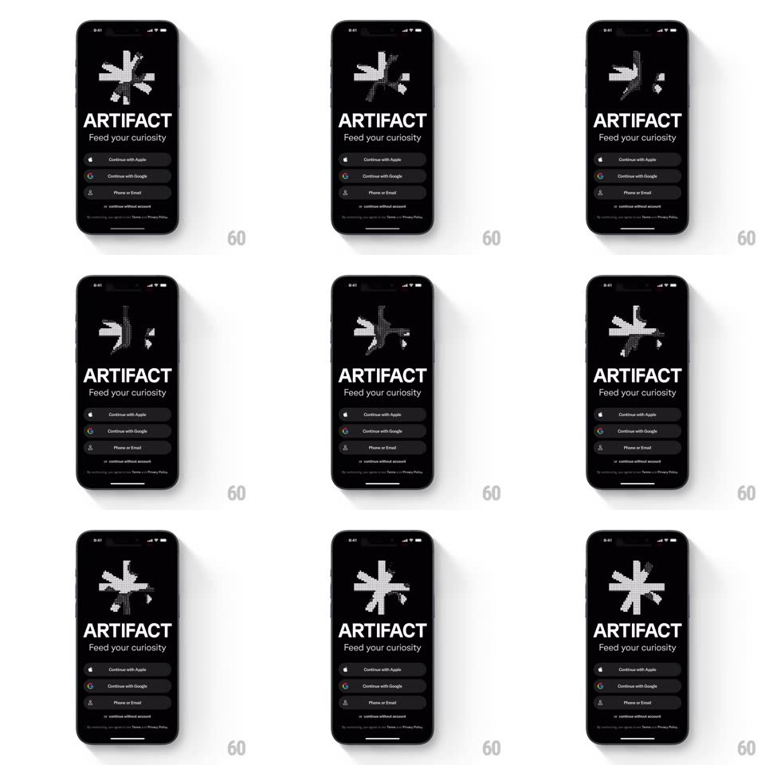

Media
Frame-by-frame

Rebuild this animation 1:1: Artifact's onboarding splash - a pixelated asterisk logo that endlessly disintegrates into scattered pixels and reforms above the auth stack.

Rebuild this animation 1:1: Artifact's onboarding splash - a pixelated asterisk logo that endlessly disintegrates into scattered pixels and reforms above the auth stack. ## Integration Integration: stack-agnostic spec - springs given as stiffness/damping, timed motions as duration + curve; map every value to your framework and animation library of choice. ## Scene Black onboarding screen: the Artifact asterisk rendered as a coarse pixel mosaic, above the "ARTIFACT" wordmark, "Feed your curiosity" tagline, and the auth buttons (Continue with Apple, Google, Phone or Email). ## Motion spec Pattern: looping pixel disintegration/reformation. - The asterisk is a grid of ~14px square pixels. Each loop: pixels at the edges flicker off in random order (50-100 per step, 30ms steps) while interior pixels hold, until only a sparse scatter remains (~1s), then the scatter drifts apart slightly (each pixel translates 4-12px with per-pixel random vectors, 400ms). - Reformation: pixels fly back to their grid slots from their drifted positions (spring ~280/22, random 0-300ms delay per pixel), the asterisk snapping whole with a final brightness tick (opacity 1 to 1.15 flash, 100ms). - Hold the formed logo ~1.2s, then the next disintegration begins. The loop is seamless and never identical: disintegration order and drift vectors reshuffle each cycle. - Wordmark, tagline, and buttons stay perfectly still - the logo is the only moving element. - Pixel grid stays aligned to the device pixel grid; no half-pixel blur. ## Calibration - The mosaic must read as the asterisk even at 40% dissolution - break edges first, core last. - Total loop ~4s; the reassembly is the satisfying beat, give it the spring. ## Reduced motion Logo static; no disintegration loop. ## Don't miss - Pixels are hard squares, not dots or rounded blobs. - Pure black background, pure white pixels - no gray intermediate states besides opacity.